library(dartRverse)W08 Genetic Structure of Wild Populations to Inform Management
W08 Genetic Divergence & Phylogenetics


Introduction
In this session we are going to cover some of the basic analyses that can be taken to inform management when faced with threatened species showing genetic structure across their natural range. The central considerations are how to draw from those populations to establish captive insurance colonies, and how to plan releases to boost declining populations.
We have heard of some real-world examples on lions by Laura Pertola and small Australian mammals by Kate Rick. In this session, we will cover some of the considerations for defining management units, ESUs and other userful designations. Craig will cover the theory and practice of population divergence. We will then look a PCA in a little more detail as one of the most powerful tools for examining structure within large SNP datasets. We will run through the seven deadly sins of classical PCA that allow the technique to be used with confidence.
Please refer to the article Georges, A., Mijangos, L., Patel, H., Aitkens, M. and Gruber, B. 2023. Distances and their visualization in studies of spatial-temporal genetic variation using single nucleotide polymorphisms (SNPs). BioxRiv https://doi.org/10.1101/2023.03.22.533737.
We move on to the example of the Broad Toothed Rat in the Barrington Tops region of NSW, not so much as a definitive study, but as a sandpit to explore some of the analyses that can be applied to a structured wild population.
We finish with an Exercise using data from the endangered Western Sawshell Turtle of the Murray Darling River Basin.
A central question in both of these studies is when there is strong genetic structure across the landscape, does this imply separate management of the distinct genetic units, and if so, at what scale.
Prerequisites
No prerequisites required. This is a very basic treatment
Workflow
Genetic structure and SNPs, defining units relevant to management.
The seven deadly sins of classical PCA
Jump into the sandpit with the Broad Toothed Rat
Exercise with the Western Sawshell Turtle
Discussion
Learning outcomes
Population divergence models
Usage of PCA
To correctly identify population structure
The why & how of population divergence models

Analysing the history of divergence and gene flow is key to defining conservation units within species

Sampling matters for species with limited dispersal!

Restricted dispersal -> isolation by distance
Spatially cluster sampling yields biased estimates of population parameters, clustering etc.
Why not use SNP-based phylogenies to estimate divergence times?
Gene trees differ from species trees: Average divergence is > split time due to deep coalescence of lineages. Difference increases with Na
SNP-based analyses overestimate divergence unless # invariant sites is known
See Leache et al. 2015 Syst. Biol.
Approaches to modeling divergence histories – population models and the multispecies coalescent

2 population model at mutation-migration equilibrium (e.g MIGRATE)
2 population Isolation with Migration (IM) model
Multispecies coalescent models +/- migration
Navigating the morass of methods…

Fitting population divergence models

- All models are wrong…
- Which one(s) best fit your data?
- Methods: dadi, moments, DILS
- Example: Marine populations
Example: rock wallabies from northern Australia (Potter et al. 2024 Syst. Biol.)

Phylogenetic discordance suggests current or historical gene flow among species
Models support migration (IM or SC) between species and populations
Take home messages
- Well-distributed population sampling is important! Often this is iterative.
- SNP based phylogenies, PCAs etc are useful as heuristics and to develop hypotheses BUT…
- Coalescent-based population methods should be used to estimate population divergence histories
- Comparing alternative models of divergence is useful BUT…
- Remember all models are wrong…
Seven sins of classical PCA
1. Missing values


2. Inappropriate distance metric
PCA vs PCoA
You can substitute the standardized covariance matrix used by PCA with any standardized distance metric (Gower, 1966).
dartR coding
- 0, homozygous reference allele (DArT set this as the most common allele)
- 1, heterozygous
- 2, homozygous alternate allele
Relative distances between individuals must not depend on the arbitrary choice of reference and alternate allele. Prudent to check this.
3. Including close relatives

4. Choosing two dimensions for convenience

Separation is definitive. Proximity is ambiguous.
Identify informative dimensions (Broken-Stick Criterion) Explicitly choose what information willing to discard
5. Confounding % explained with biological importance
Sin 5: “PC1 explains X% across datasets, a comparable across studies measure of”strength of structure”
But % variance depends on loci, scaling, LD pruning, MAF filters, sample composition. Use the Tracy-Widom framework, and by default in dartR, the broken-stick criterion to distinguish signal from noise.
AND
PCA and PCoA compute % explained in fundamentally different ways and so are not comparable.
6. Structural variants and gross linkage

Weird inexplicable patterns – 2 or 3 replicated sets of aggregations If two patterns – sex linkage?
If 2 or 3, large structural variant?
7. Over-interpretation
Sin 7: Treating PCs as direct evidence for specific processes, discrete groups, or biological mechanisms when PCA is fundamentally a variance-maximizing projection showing patterns.
BOTTOM LINE
Care to avoid the seven sins. PCA is an incredible tool that lends itself to SNP analysis. But it is a hypothesis generating tool only and must be followed by more definitive analyses.
Worked Example: Broad Toothed Rat

Insurance breeding colony established
Sampled using cheek swabs
Genotyped using DArTseq
Advice on who to breed with whom to maximize genetic diversity in the offspring
Opportunity for us to explore genetic diversity in the source population
Required packages
Step 1 Load in the data:
gl.set.verbosity(3)Starting gl.set.verbosity
Global verbosity set to: 3
Completed: gl.set.verbosity gl <- gl.load(file="./data/Mastocomys.Rdata")Starting gl.load
Processing genlight object with SNP data
Loaded object of type SNP from ./data/Mastocomys.Rdata
Starting gl.compliance.check
Processing genlight object with SNP data
Checking coding of SNPs
SNP data scored NA, 0, 1 or 2 confirmed
Checking for population assignments
Population assignments confirmed
Checking locus metrics and flags
Recalculating locus metrics
Checking for monomorphic loci
Dataset contains monomorphic loci
Checking for loci with all missing data
No loci with all missing data detected
Checking whether individual names are unique.
Checking for individual metrics
Individual metrics confirmed
Spelling of coordinates checked and changed if necessary to
lat/lon
Completed: gl.compliance.check
Completed: gl.load Step 2 Interrogate:
gl ********************
*** DARTR OBJECT ***
********************
** 20 genotypes, 1,727 SNPs , size: 1.5 Mb
missing data: 21535 (=62.35 %) scored as NA
** Genetic data
@gen: list of 20 SNPbin
@ploidy: ploidy of each individual (range: 2-2)
** Additional data
@ind.names: 20 individual labels
@loc.names: 1727 locus labels
@loc.all: 1727 allele labels
@position: integer storing positions of the SNPs [within 69 base sequence]
@pop: population of each individual (group size range: 4-6)
@other: a list containing: loc.metrics, ind.metrics, latlon, loc.metrics.flags, verbose, history
@other$ind.metrics: seq, id, pop, sex, lat, lon, service, plate_location
@other$loc.metrics: AlleleID, CloneID, AlleleSequence, TrimmedSequence, SNP, SnpPosition, CallRate, OneRatioRef, OneRatioSnp, FreqHomRef, FreqHomSnp, FreqHets, PICRef, PICSnp, AvgPIC, AvgCountRef, AvgCountSnp, RepAvg, clone, uid, rdepth, monomorphs, maf, OneRatio, PIC
@other$latlon[g]: coordinates for all individuals are attachedpopNames(gl)[1] "Brumlow" "Gloucester_Tops" "Polblue" "Watergauge" indNames(gl) [1] "ARP_Layley.1" "ARP_Pete.1" "ARP_Layley.2" "ARP_Pete.2"
[5] "ARP_Deano.1" "ARP_Matty.1" "ARP_Ruby.1" "ARP_Deano.2"
[9] "ARP_Matty.2" "ARP_Ruby.2" "ARP_Delilah.1" "ARP_Naura.1"
[13] "ARP_Delilah.2" "ARP_Naura.2" "ARP_Dot.1" "ARP_Lawrie.1"
[17] "ARP_Peggy.1" "ARP_Dot.2" "ARP_Lawrie.2" "ARP_Peggy.2" table(pop(gl))
Brumlow Gloucester_Tops Polblue Watergauge
6 6 4 4 gl@other$latlongNULLStep 3 Examine geography:
gl.map.interactive(gl)Starting gl.map.interactive
Processing genlight object with SNP data
Completed: gl.map.interactive Step 4 Filtering:
gl.report.callrate(gl)Starting gl.report.callrate
Processing genlight object with SNP data
Reporting Call Rate by Locus
No. of loci = 1727
No. of individuals = 20
Minimum : 0.05
1st quartile : 0.25
Median : 0.35
Mean : 0.37652
3r quartile : 0.45
Maximum : 1
Missing Rate Overall: 0.6235
Quantile Threshold Retained Percent Filtered Percent
1 100% 1.00 1 0.1 1726 99.9
2 95% 0.75 115 6.7 1612 93.3
3 90% 0.65 213 12.3 1514 87.7
4 85% 0.60 263 15.2 1464 84.8
5 80% 0.50 415 24.0 1312 76.0
6 75% 0.45 526 30.5 1201 69.5
7 70% 0.45 526 30.5 1201 69.5
8 65% 0.40 675 39.1 1052 60.9
9 60% 0.35 895 51.8 832 48.2
10 55% 0.35 895 51.8 832 48.2
11 50% 0.35 895 51.8 832 48.2
12 45% 0.30 1155 66.9 572 33.1
13 40% 0.30 1155 66.9 572 33.1
14 35% 0.30 1155 66.9 572 33.1
15 30% 0.25 1413 81.8 314 18.2
16 25% 0.25 1413 81.8 314 18.2
17 20% 0.25 1413 81.8 314 18.2
18 15% 0.20 1566 90.7 161 9.3
19 10% 0.20 1566 90.7 161 9.3
20 5% 0.15 1660 96.1 67 3.9
21 0% 0.05 1727 100.0 0 0.0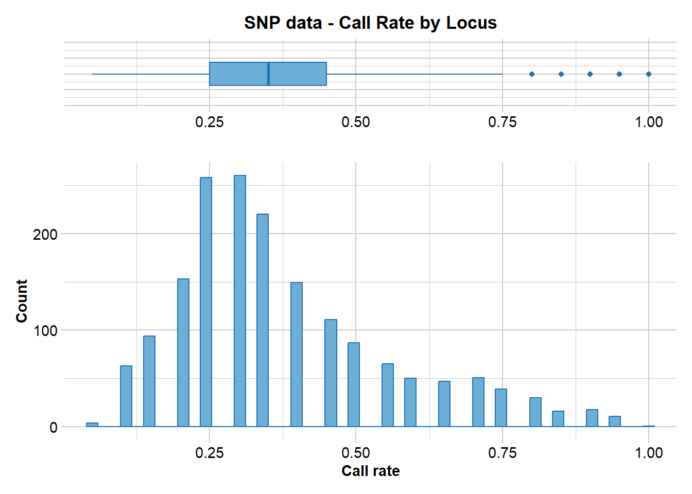
Completed: gl.report.callrate gl.filter.callrate(gl, threshold=0.5)Starting gl.filter.callrate
Processing genlight object with SNP data
Warning: Data may include monomorphic loci in call rate
calculations for filtering
Recalculating Call Rate
Removing loci based on Call Rate, threshold = 0.5
Summary of filtered dataset
Call Rate for loci > 0.5
Original No. of loci : 1727
Original No. of individuals: 20
No. of loci retained: 415
No. of individuals retained: 20
No. of populations: 4 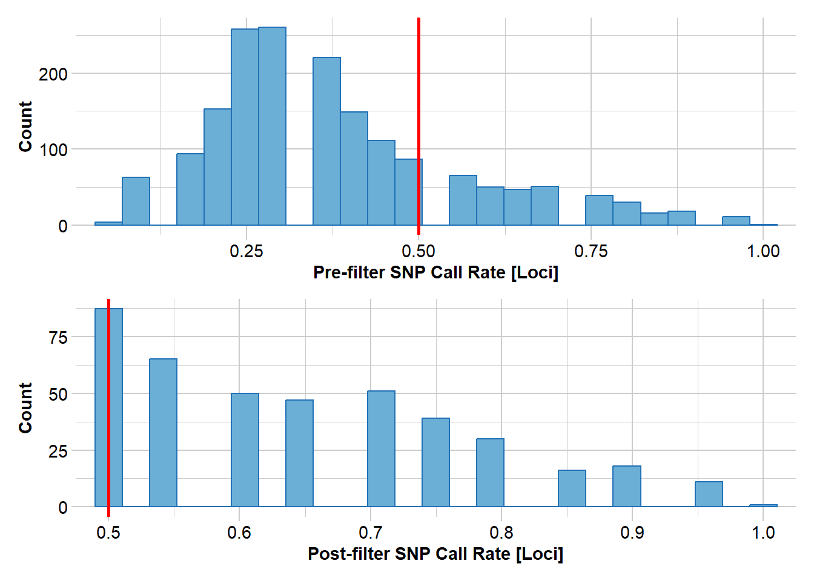
Completed: gl.filter.callrate Step 5 Exploratory visualization:
pca <- gl.pcoa(gl)Starting gl.pcoa
Processing genlight object with SNP data
Performing a PCA, individuals as entities, loci as attributes, SNP genotype as stateFound more than one class "dist" in cache; using the first, from namespace 'BiocGenerics'Also defined by 'spam'Found more than one class "dist" in cache; using the first, from namespace 'BiocGenerics'Also defined by 'spam' Ordination yielded 1 informative dimensions( broken-stick criterion) from 19 original dimensions
PCA Axis 1 explains 0 % of the total variance
PCA Axis 1 and 2 combined explain NA % of the total variance
PCA Axis 1-3 combined explain NA % of the total variance
Starting gl.colors
Selected color type 2
Completed: gl.colors `geom_line()`: Each group consists of only one observation.
ℹ Do you need to adjust the group aesthetic?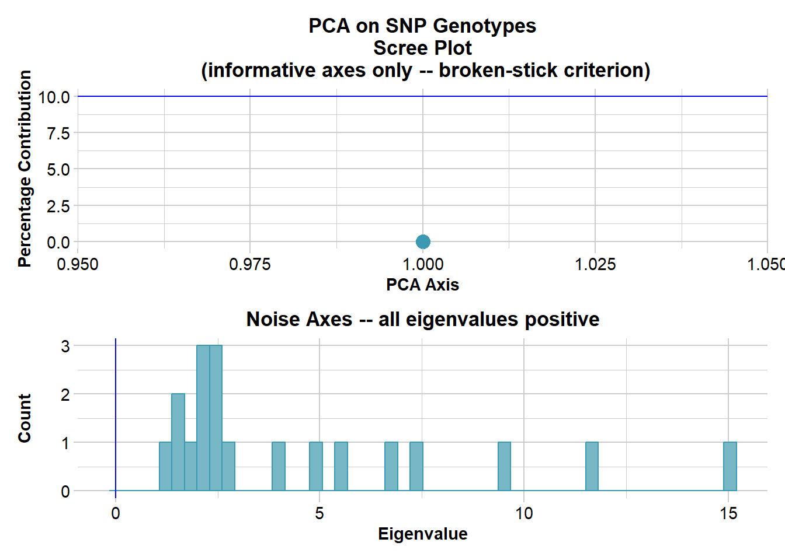
Completed: gl.pcoa gl.pcoa.plot(pca,gl,ellipse=TRUE, plevel=0.67)Starting gl.pcoa.plot
Processing an ordination file (glPca)
Processing genlight object with SNP data
Plotting populations in a space defined by the SNPs
Preparing plot .... please wait
Completed: gl.pcoa.plot 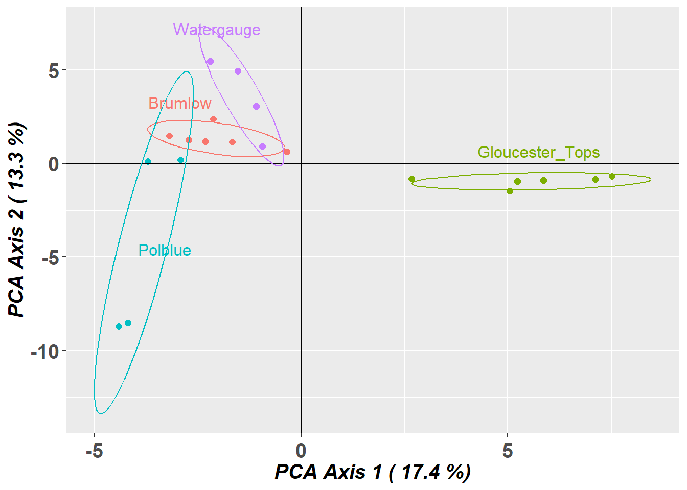
gl <- gl.impute(gl) Starting gl.impute
Processing genlight object with SNP data
Imputation based on drawing from the nearest neighbour
Warning: Population Brumlow has 1336 loci with all missing values.
Method = 'neighbour': -966 values to be imputed (excluding all-NA loci).
Warning: Population Gloucester_Tops has 1323 loci with all missing values.
Method = 'neighbour': -986 values to be imputed (excluding all-NA loci).
Warning: Population Polblue has 1316 loci with all missing values.
Method = 'neighbour': -1547 values to be imputed (excluding all-NA loci).
Warning: Population Watergauge has 1250 loci with all missing values.
Method = 'neighbour': -1184 values to be imputed (excluding all-NA loci).
Calculating the unscaled distance matrix -- euclidean
Residual missing values were filled randomly drawing from the global allele profiles by locus
Imputation method: neighbour
No. of missing values before imputation: 21535
No. of loci with all NA's for any one population before imputation: 3500
No. of values imputed: 21535
No. of missing values after imputation: 0
No. of loci with all NA's for any one population after imputation: 0
Completed: gl.impute pca <- gl.pcoa(gl) # 2 informative axesStarting gl.pcoa
Processing genlight object with SNP data
Performing a PCA, individuals as entities, loci as attributes, SNP genotype as state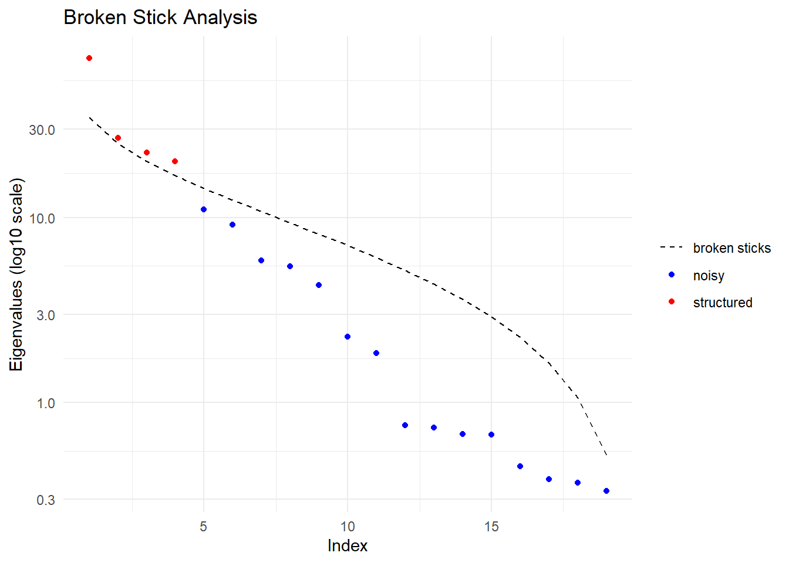
Ordination yielded 4 informative dimensions( broken-stick criterion) from 19 original dimensions
PCA Axis 1 explains 39 % of the total variance
PCA Axis 1 and 2 combined explain 53.5 % of the total variance
PCA Axis 1-3 combined explain 65.5 % of the total variance
Starting gl.colors
Selected color type 2
Completed: gl.colors 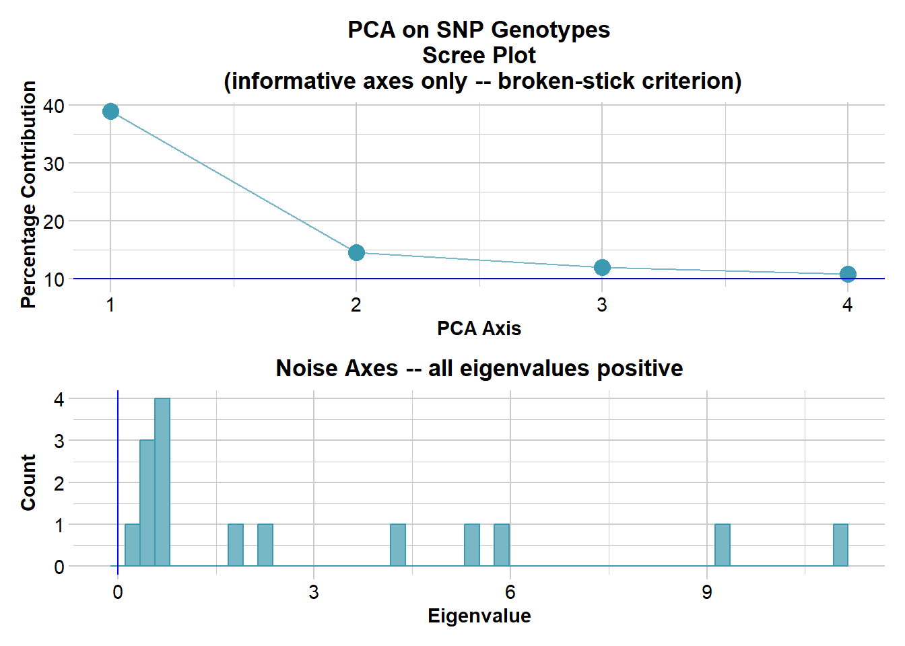
Completed: gl.pcoa gl.pcoa.plot(pca,gl,ellipse=TRUE, plevel=0.67)Starting gl.pcoa.plot
Processing an ordination file (glPca)
Processing genlight object with SNP data
Plotting populations in a space defined by the SNPs
Preparing plot .... please wait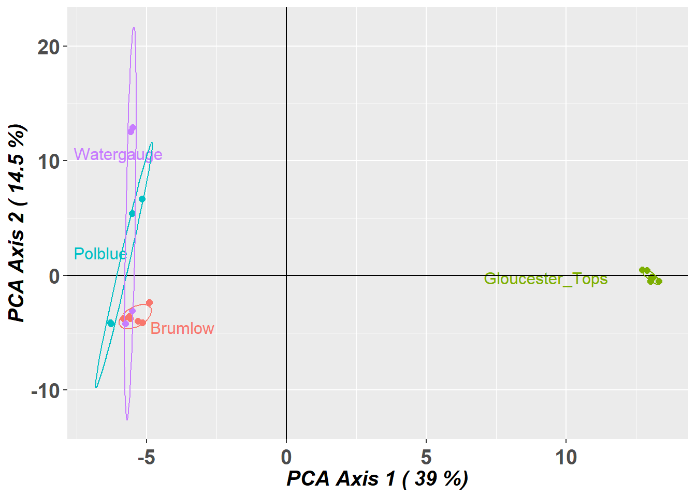
Completed: gl.pcoa.plot 
Step 6 Analysis:
# F Statistics
gl.report.fstat(gl)Starting gl.report.fstat
Processing genlight object with SNP data
$Stat_matrices
$Stat_matrices$Fst
Brumlow Gloucester_Tops Polblue Watergauge
Brumlow NA 0.5296 0.1881 0.1252
Gloucester_Tops 0.5296 NA 0.4305 0.4394
Polblue 0.1881 0.4305 NA 0.1283
Watergauge 0.1252 0.4394 0.1283 NA
$Stat_matrices$Fstp
Brumlow Gloucester_Tops Polblue Watergauge
Brumlow NA 0.6925 0.3166 0.2225
Gloucester_Tops 0.6925 NA 0.6019 0.6105
Polblue 0.3166 0.6019 NA 0.2274
Watergauge 0.2225 0.6105 0.2274 NA
$Stat_matrices$Dest
Brumlow Gloucester_Tops Polblue Watergauge
Brumlow NA 0.2220 0.0810 0.0444
Gloucester_Tops 0.2220 NA 0.2564 0.2352
Polblue 0.0810 0.2564 NA 0.0714
Watergauge 0.0444 0.2352 0.0714 NA
$Stat_matrices$Gst_H
Brumlow Gloucester_Tops Polblue Watergauge
Brumlow NA 0.8060 0.4062 0.2775
Gloucester_Tops 0.8060 NA 0.7711 0.7599
Polblue 0.4062 0.7711 NA 0.3139
Watergauge 0.2775 0.7599 0.3139 NA
$Stat_tables
Stat_tables.Brumlow_vs_Gloucester_Tops Stat_tables.Brumlow_vs_Polblue
Fst 0.5296 0.1881
Fstp 0.6925 0.3166
Dest 0.2220 0.0810
Gst_H 0.8060 0.4062
Stat_tables.Brumlow_vs_Watergauge Stat_tables.Gloucester_Tops_vs_Polblue
Fst 0.1252 0.4305
Fstp 0.2225 0.6019
Dest 0.0444 0.2564
Gst_H 0.2775 0.7711
Stat_tables.Gloucester_Tops_vs_Watergauge
Fst 0.4394
Fstp 0.6105
Dest 0.2352
Gst_H 0.7599
Stat_tables.Polblue_vs_Watergauge
Fst 0.1283
Fstp 0.2274
Dest 0.0714
Gst_H 0.3139
Starting gl.plot.heatmap Found more than one class "dist" in cache; using the first, from namespace 'BiocGenerics'Also defined by 'spam' Processing a data matrixRegistered S3 method overwritten by 'dendextend':
method from
rev.hclust veganWarning in rep(col, length.out = leaves_length): 'x' is NULL so the result will
be NULLWarning in rep(if (nam %in% names(L)) L[[nam]] else default, length.out =
indx): 'x' is NULL so the result will be NULL
Warning in rep(if (nam %in% names(L)) L[[nam]] else default, length.out =
indx): 'x' is NULL so the result will be NULL
Warning in rep(if (nam %in% names(L)) L[[nam]] else default, length.out =
indx): 'x' is NULL so the result will be NULL
Warning in rep(if (nam %in% names(L)) L[[nam]] else default, length.out =
indx): 'x' is NULL so the result will be NULL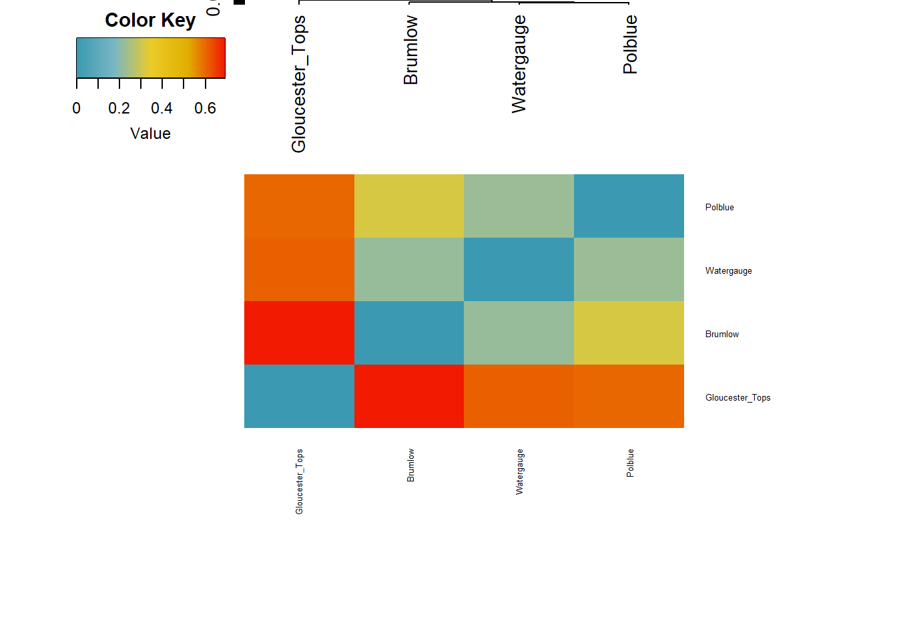
Completed: gl.plot.heatmap
Completed: gl.report.fstat $Stat_matrices
$Stat_matrices$Fst
Brumlow Gloucester_Tops Polblue Watergauge
Brumlow NA 0.5296 0.1881 0.1252
Gloucester_Tops 0.5296 NA 0.4305 0.4394
Polblue 0.1881 0.4305 NA 0.1283
Watergauge 0.1252 0.4394 0.1283 NA
$Stat_matrices$Fstp
Brumlow Gloucester_Tops Polblue Watergauge
Brumlow NA 0.6925 0.3166 0.2225
Gloucester_Tops 0.6925 NA 0.6019 0.6105
Polblue 0.3166 0.6019 NA 0.2274
Watergauge 0.2225 0.6105 0.2274 NA
$Stat_matrices$Dest
Brumlow Gloucester_Tops Polblue Watergauge
Brumlow NA 0.2220 0.0810 0.0444
Gloucester_Tops 0.2220 NA 0.2564 0.2352
Polblue 0.0810 0.2564 NA 0.0714
Watergauge 0.0444 0.2352 0.0714 NA
$Stat_matrices$Gst_H
Brumlow Gloucester_Tops Polblue Watergauge
Brumlow NA 0.8060 0.4062 0.2775
Gloucester_Tops 0.8060 NA 0.7711 0.7599
Polblue 0.4062 0.7711 NA 0.3139
Watergauge 0.2775 0.7599 0.3139 NA
[[2]]
Stat_tables.Brumlow_vs_Gloucester_Tops Stat_tables.Brumlow_vs_Polblue
Fst 0.5296 0.1881
Fstp 0.6925 0.3166
Dest 0.2220 0.0810
Gst_H 0.8060 0.4062
Stat_tables.Brumlow_vs_Watergauge Stat_tables.Gloucester_Tops_vs_Polblue
Fst 0.1252 0.4305
Fstp 0.2225 0.6019
Dest 0.0444 0.2564
Gst_H 0.2775 0.7711
Stat_tables.Gloucester_Tops_vs_Watergauge
Fst 0.4394
Fstp 0.6105
Dest 0.2352
Gst_H 0.7599
Stat_tables.Polblue_vs_Watergauge
Fst 0.1283
Fstp 0.2274
Dest 0.0714
Gst_H 0.3139# Allelic Richness
r1 <- gl.report.allelerich(gl)Starting gl.report.allelerich
Processing genlight object with SNP data
Calculating Allelic Richness, averaged across
loci, for each population
Starting gl.colors
Selected color type dis
Completed: gl.colors
Returning a dataframe with allelic richness values
Completed: gl.report.allelerich 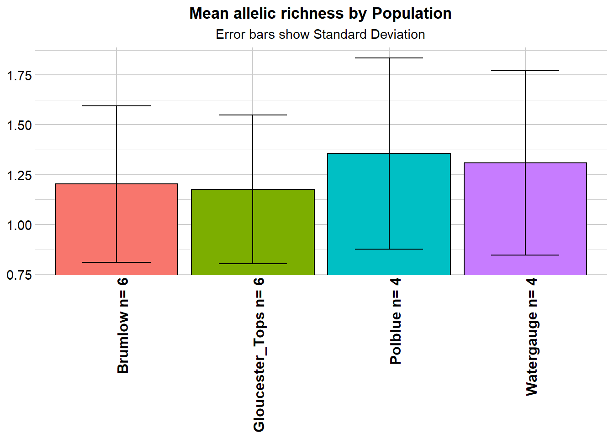
# Allelic Richness Simulation
r1 <- gl.report.allelerich(gl)Starting gl.report.allelerich
Processing genlight object with SNP data
Calculating Allelic Richness, averaged across
loci, for each population
Starting gl.colors
Selected color type dis
Completed: gl.colors
Returning a dataframe with allelic richness values
Completed: gl.report.allelerich 
r2 <- gl.report.nall( x = gl, simlevels = seq(1, nInd(gl), 5), reps = 10, plot.colors.pop = gl.colors("dis"), ncores = 2)Starting gl.report.nall
Processing genlight object with SNP data
Starting gl.filter.allna
Identifying and removing loci that are all missing (NA)
in any one population
Deleting loci that are all missing (NA) in any one population
Brumlow : deleted 0 loci
Gloucester_Tops : deleted 0 loci
Polblue : deleted 0 loci
Watergauge : deleted 0 loci
Loci all NA in one or more populations: 0 deleted
Completed: gl.filter.allna
Starting gl.colors
Selected color type dis
Completed: gl.colors 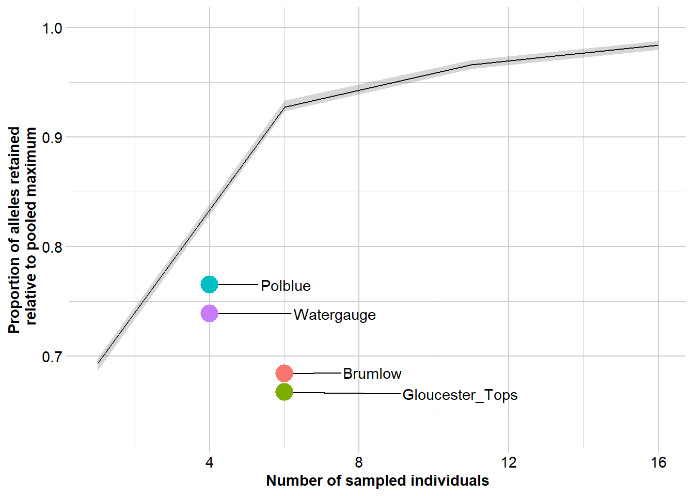
Completed: gl.report.nall # Private Alleles
r1 <- gl.report.pa(gl)Starting gl.report.pa
Processing genlight object with SNP data
p1 p2 pop1 pop2 N1 N2 fixed priv1 priv2 Chao1 Chao2
1 1 2 Brumlow Gloucester_Tops 6 6 244 547 495 0 1
2 1 3 Brumlow Polblue 6 4 31 217 465 0 0
3 1 4 Brumlow Watergauge 6 4 3 190 357 0 0
4 2 3 Gloucester_Tops Polblue 6 4 233 455 755 1 0
5 2 4 Gloucester_Tops Watergauge 6 4 226 438 657 1 0
6 3 4 Polblue Watergauge 4 4 28 379 298 0 0
totalpriv AFD asym asym.sig
1 1042 0.283 NA NA
2 682 0.191 NA NA
3 547 0.146 NA NA
4 1210 0.349 NA NA
5 1095 0.319 NA NA
6 677 0.201 NA NA
Table of private alleles and fixed differences returned
Completed: gl.report.pa Step 7. Interpetation
- PCA indicates a high degree of population structure
- This is borne out by the FST analysis
- Allelic diversity is a little low, not exceptionally, and not differentially
- Each subpopulation has a high frequency of private alleles
Working Hypothesis: The Barrington Tops populations likely represent a former widespread and connected population, subsequently fragmented with differential loss and retention of alleles under the influence of drift.
Future Work: - Increase sample sizes to better capture allelic profiles - Calculate \(N_e\) to assess likelihood of population persistence - Plot \(N_e\) through time to see if there is evidence of a bottleneck
Kate Rick: Strong structure does not necessarily mean separate management of divergent groups.
Maximizing the Barrington Tops population potential to adapt and persist may require cross-breeding and distributed release.
Management (subject to findings of future work) Sampling should be from across the sites in Barrington Tops, cross-breeding should be undertaken to capture allelic diversity, and strategic re-release across sites is likely to be a well-supported strategy.
Worked Example: Western Sawshell Turtle


Not cute as mustard, EPBC Act:Endangered; Headwaters of the Murray-Darling Basin – Namoi, Gwydir and Border Rivers subdrainage basins
Insurance breeding colony established
Sampled using skin biopsy
Genotyped using DArTseq
Is the colony representative of the genetic diversity of wild populations
Advice on who to breed with whom to maximize genetic diversity in the offspring for release
Exercise: Western Sawshell Turtle
Step 1. Load in the data (Myuchelys.Rdata)
Step 2. Interrogate the data
Step 3. Examine geographically
Step 4. Filtering – craft a regime
Step 5. Exploratory visualization
Step 6. Analysis
Step 7. Interpretation
Required packages
library(dartRverse)Step 1 Load in the data:
gl.set.verbosity(3)Starting gl.set.verbosity
Global verbosity set to: 3
Completed: gl.set.verbosity gl <- gl.load(file="./data/Myuchelys.Rdata")Starting gl.load
Processing genlight object with SNP data
Loaded object of type SNP from ./data/Myuchelys.Rdata
Starting gl.compliance.check
Processing genlight object with SNP data
Checking coding of SNPs
SNP data scored NA, 0, 1 or 2 confirmed
Checking for population assignments
Population assignments confirmed
Checking locus metrics and flags
Recalculating locus metrics
Checking for monomorphic loci
No monomorphic loci detected
Checking for loci with all missing data
No loci with all missing data detected
Checking whether individual names are unique.
Checking for individual metrics
Individual metrics confirmed
Spelling of coordinates checked and changed if necessary to
lat/lon
Completed: gl.compliance.check
Completed: gl.load Step 2 Interrogate:
gl ********************
*** DARTR OBJECT ***
********************
** 141 genotypes, 31,289 SNPs , size: 74.9 Mb
missing data: 512130 (=11.61 %) scored as NA
** Genetic data
@gen: list of 141 SNPbin
@ploidy: ploidy of each individual (range: 2-2)
** Additional data
@ind.names: 141 individual labels
@loc.names: 31289 locus labels
@loc.all: 31289 allele labels
@position: integer storing positions of the SNPs [within 69 base sequence]
@pop: population of each individual (group size range: 13-65)
@other: a list containing: loc.metrics, ind.metrics, latlon, loc.metrics.flags, verbose, history
@other$ind.metrics: id, pop, drainage, species, lat, lon, service, plate_location
@other$loc.metrics: AlleleID, CloneID, AlleleSequence, TrimmedSequence, Chrom_Myuchelys_georgesi_rMyuGeo1.pri, ChromPosTag_Myuchelys_georgesi_rMyuGeo1.pri, ChromPosSnp_Myuchelys_georgesi_rMyuGeo1.pri, AlnCnt_Myuchelys_georgesi_rMyuGeo1.pri, AlnEvalue_Myuchelys_georgesi_rMyuGeo1.pri, Strand_Myuchelys_georgesi_rMyuGeo1.pri, SNP, SnpPosition, CallRate, OneRatioRef, OneRatioSnp, FreqHomRef, FreqHomSnp, FreqHets, PICRef, PICSnp, AvgPIC, AvgCountRef, AvgCountSnp, RepAvg, clone, uid, rdepth, monomorphs, maf, OneRatio, PIC
@other$latlon[g]: coordinates for all individuals are attachedpopNames(gl)[1] "Border-Nth" "Border-Sth" "Gwydir" "Namoi" indNames(gl) [1] "AA042487" "AA042500" "Q19140" "AA004437" "AA004461" "AA004469"
[7] "AA042479" "AA042488" "AA18895" "Q19141" "AA004438" "AA004462"
[13] "AA004470" "AA042480" "AA042489" "Q19128" "Q19145" "AA004439"
[19] "AA004463" "AA004471" "AA042481" "AA042490" "Q19130" "AA004440"
[25] "AA004464" "AA004472" "AA042482" "Q19131" "AA061829" "AA004433"
[31] "AA004441" "AA004465" "AA004473" "AA042483" "AA042497" "Q19133"
[37] "AA061831" "AA004434" "AA004442" "AA004466" "AA004474" "AA042484"
[43] "AA042498" "Q19134" "AA004435" "AA004459" "AA004467" "AA004475"
[49] "AA042485" "AA042499" "Q19139" "AA004436" "AA004460" "AA004468"
[55] "AA004476" "AA042486" "LSWt049" "LSWt057" "LSWt066" "LSWt025"
[61] "LSWt033" "LSWt041" "LSWt050" "LSWt059" "LSWt067" "LSWt026"
[67] "LSWt034" "LSWt042" "LSWt051" "LSWt060" "LSWt068" "LSWt027"
[73] "LSWt035" "LSWt043" "LSWt052" "LSWt061" "LSWt069" "LSWt028"
[79] "LSWt036" "LSWt044" "LSWt053" "LSWt062" "LSWt070" "LSWt029"
[85] "LSWt037" "LSWt045" "LSWt054" "LSWt063" "LSWt071" "LSWt030"
[91] "LSWt038" "LSWt046" "LSWt055" "LSWt064" "LSWt031" "LSWt039"
[97] "LSWt047" "LSWt056" "LSWt065" "LSWt032" "LSWt040" "LSWt048"
[103] "LSWt074" "LSWt082" "LSWt090" "LSWt098" "LSWt106" "LSWt075"
[109] "LSWt083" "LSWt091" "LSWt099" "LSWt107" "LSWt076" "LSWt084"
[115] "LSWt092" "LSWt100" "LSWt108" "LSWt077" "LSWt085" "LSWt093"
[121] "LSWt101" "LSWt109" "LSWt078" "LSWt086" "LSWt094" "LSWt102"
[127] "LSWt110" "LSWt079" "LSWt087" "LSWt095" "LSWt103" "LSWt080"
[133] "LSWt088" "LSWt096" "LSWt104" "LSWt072" "LSWt081" "LSWt089"
[139] "LSWt097" "LSWt105" "LSWt073" table(pop(gl))
Border-Nth Border-Sth Gwydir Namoi
13 41 65 22 gl@other$latlon lat lon
AA042487 -30.68550 151.1212
AA042500 -30.46795 151.3111
Q19140 -28.83190 151.9486
AA004437 -30.94012 151.3248
AA004461 -30.50848 151.1195
AA004469 -30.50848 151.1195
AA042479 -30.94012 151.3248
AA042488 -30.68550 151.1212
AA18895 -28.82950 151.9399
Q19141 -28.82950 151.9399
AA004438 -30.94012 151.3248
AA004462 -30.51561 151.1210
AA004470 -30.50848 151.1195
AA042480 -30.94012 151.3248
AA042489 -30.68550 151.1212
Q19128 -28.82950 151.9399
Q19145 -28.82950 151.9399
AA004439 -30.94012 151.3248
AA004463 -30.50848 151.1195
AA004471 -30.50848 151.1195
AA042481 -30.68550 151.1212
AA042490 -30.68550 151.1212
Q19130 -28.82950 151.9399
AA004440 -30.94012 151.3248
AA004464 -30.50848 151.1195
AA004472 -30.50848 151.1195
AA042482 -30.68550 151.1212
Q19131 -28.82950 151.9399
AA061829 -30.16712 151.0753
AA004433 -30.94012 151.3248
AA004441 -30.94012 151.3248
AA004465 -30.50848 151.1195
AA004473 -30.50848 151.1195
AA042483 -30.68550 151.1212
AA042497 -30.46795 151.3111
Q19133 -28.83190 151.9486
AA061831 -30.16712 151.0753
AA004434 -30.94012 151.3248
AA004442 -30.94012 151.3248
AA004466 -30.50848 151.1195
AA004474 -30.50848 151.1195
AA042484 -30.68550 151.1212
AA042498 -30.46795 151.3111
Q19134 -28.82950 151.9399
AA004435 -30.94012 151.3248
AA004459 -30.50848 151.1195
AA004467 -30.50848 151.1195
AA004475 -30.50848 151.1195
AA042485 -30.68550 151.1212
AA042499 -30.46795 151.3111
Q19139 -28.83190 151.9486
AA004436 -30.94012 151.3248
AA004460 -30.50848 151.1195
AA004468 -30.50848 151.1195
AA004476 -30.50848 151.1195
AA042486 -30.68550 151.1212
LSWt049 -30.67500 151.4513
LSWt057 -30.67630 151.4529
LSWt066 -30.07390 151.3439
LSWt025 -29.42525 151.8426
LSWt033 -29.92533 151.1063
LSWt041 -30.14095 151.3823
LSWt050 -30.67500 151.4513
LSWt059 -30.07130 151.3358
LSWt067 -30.07390 151.3439
LSWt026 -29.42525 151.8426
LSWt034 -29.92556 151.1069
LSWt042 -30.21392 151.0832
LSWt051 -30.67500 151.4513
LSWt060 -30.07089 151.3374
LSWt068 -30.42880 151.5974
LSWt027 -29.38272 151.8845
LSWt035 -29.92556 151.1069
LSWt043 -30.21540 151.0805
LSWt052 -30.67500 151.4513
LSWt061 -30.06970 151.3402
LSWt069 -30.42880 151.5974
LSWt028 -29.92550 151.1066
LSWt036 -29.92556 151.1069
LSWt044 -30.21540 151.0805
LSWt053 -30.67500 151.4513
LSWt062 -30.07178 151.3387
LSWt070 -29.72596 151.7875
LSWt029 -29.92550 151.1066
LSWt037 -29.92556 151.1069
LSWt045 -30.21540 151.0805
LSWt054 -30.67630 151.4529
LSWt063 -30.07380 151.3437
LSWt071 -29.73085 151.7885
LSWt030 -29.92546 151.1063
LSWt038 -30.14236 151.3813
LSWt046 -30.21457 151.0823
LSWt055 -30.67480 151.4529
LSWt064 -30.07380 151.3437
LSWt031 -29.92546 151.1063
LSWt039 -30.14204 151.3816
LSWt047 -30.21367 151.0836
LSWt056 -30.67480 151.4529
LSWt065 -30.07380 151.3437
LSWt032 -29.92546 151.1063
LSWt040 -30.14157 151.3820
LSWt048 -30.67630 151.4529
LSWt074 -29.73297 151.7878
LSWt082 -29.69141 151.7980
LSWt090 -29.47887 151.4875
LSWt098 -29.50870 151.7105
LSWt106 -29.50729 151.7103
LSWt075 -29.73255 151.7895
LSWt083 -29.58655 151.7411
LSWt091 NA NA
LSWt099 -29.50729 151.7103
LSWt107 -29.68650 151.5483
LSWt076 -29.76509 151.7721
LSWt084 -29.68465 151.7977
LSWt092 -29.50630 151.7085
LSWt100 -29.50729 151.7103
LSWt108 -29.68650 151.5483
LSWt077 -29.73376 151.7869
LSWt085 -29.50850 151.6267
LSWt093 -29.53298 151.7194
LSWt101 -29.50729 151.7103
LSWt109 -29.68500 151.5521
LSWt078 -29.73375 151.7846
LSWt086 -29.50850 151.6271
LSWt094 -29.53244 151.7182
LSWt102 -29.50906 151.7040
LSWt110 -29.68490 151.5526
LSWt079 -29.69719 151.7991
LSWt087 -29.50270 151.6113
LSWt095 -29.50978 151.7107
LSWt103 -29.50906 151.7040
LSWt080 -29.69669 151.7990
LSWt088 -29.47887 151.4875
LSWt096 -29.50940 151.7105
LSWt104 -29.50906 151.7040
LSWt072 -29.73297 151.7878
LSWt081 -29.69669 151.7990
LSWt089 -29.47887 151.4875
LSWt097 -29.50895 151.7105
LSWt105 -29.50906 151.7040
LSWt073 -29.73330 151.7837Step 3 Examine geography:
gl.map.interactive(gl)Starting gl.map.interactive
Processing genlight object with SNP dataWarning in validateCoords(lng, lat, funcName): Data contains 1 rows with either
missing or invalid lat/lon values and will be ignoredCompleted: gl.map.interactive Step 4 Craft a Filtering Regime:
First let us do a smear plot of individuals (vertical) against loci (horizontal)
gl.smearplot(gl) Processing genlight object with SNP data
Starting gl.smearplot 
Completed: gl.smearplot 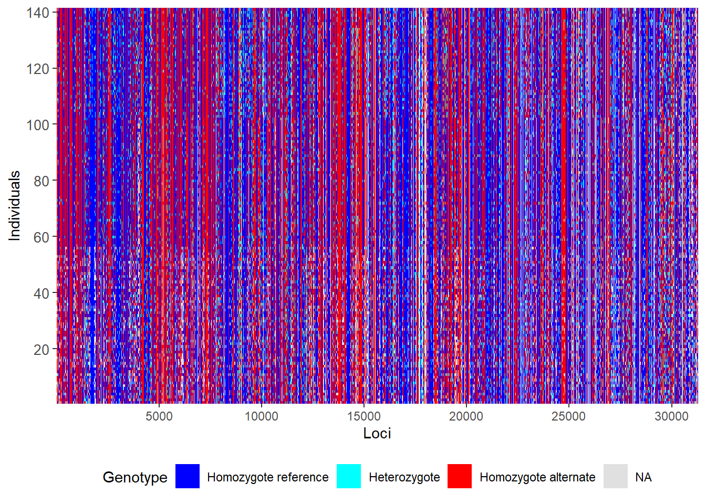
Note that missing values are in grey, so they give an indication of how dense your data set is (as opposed to being littered with gaps). Then we craft a filtering regime.
Unfortunately, we do not have the sexes in this dataset, so we cannot filter on sex linkage, which would be our first port of call. So lets start with call rate.
gl.report.callrate(gl)Starting gl.report.callrate
Processing genlight object with SNP data
Reporting Call Rate by Locus
No. of loci = 31289
No. of individuals = 141
Minimum : 0.0070922
1st quartile : 0.87234
Median : 0.992908
Mean : 0.8839168
3r quartile : 1
Maximum : 1
Missing Rate Overall: 0.1161
Quantile Threshold Retained Percent Filtered Percent
1 100% 1.0000000 13396 42.8 17893 57.2
2 95% 1.0000000 13396 42.8 17893 57.2
3 90% 1.0000000 13396 42.8 17893 57.2
4 85% 1.0000000 13396 42.8 17893 57.2
5 80% 1.0000000 13396 42.8 17893 57.2
6 75% 1.0000000 13396 42.8 17893 57.2
7 70% 1.0000000 13396 42.8 17893 57.2
8 65% 1.0000000 13396 42.8 17893 57.2
9 60% 1.0000000 13396 42.8 17893 57.2
10 55% 0.9929080 15752 50.3 15537 49.7
11 50% 0.9929080 15752 50.3 15537 49.7
12 45% 0.9787230 18056 57.7 13233 42.3
13 40% 0.9716310 18829 60.2 12460 39.8
14 35% 0.9503550 20399 65.2 10890 34.8
15 30% 0.9148940 22138 70.8 9151 29.2
16 25% 0.8723400 23655 75.6 7634 24.4
17 20% 0.8226950 25112 80.3 6177 19.7
18 15% 0.7517730 26704 85.3 4585 14.7
19 10% 0.6312060 28187 90.1 3102 9.9
20 5% 0.3049650 29732 95.0 1557 5.0
21 0% 0.0070922 31289 100.0 0 0.0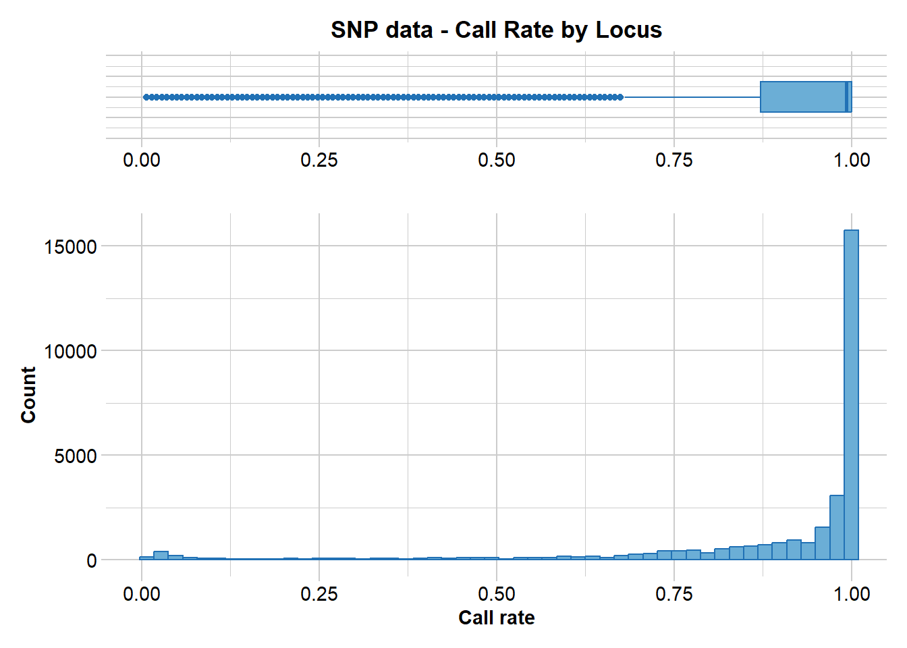
Completed: gl.report.callrate The distribution of call rate values indicates a need for filtering, and based on that distribution we pick a threshold of 0.95.
Any loci with less than 95% scored across individuals will be discarded.
gl.filter.callrate(gl, threshold=0.95)Starting gl.filter.callrate
Processing genlight object with SNP data
Recalculating Call Rate
Removing loci based on Call Rate, threshold = 0.95
Summary of filtered dataset
Call Rate for loci > 0.95
Original No. of loci : 31289
Original No. of individuals: 141
No. of loci retained: 20399
No. of individuals retained: 141
No. of populations: 4 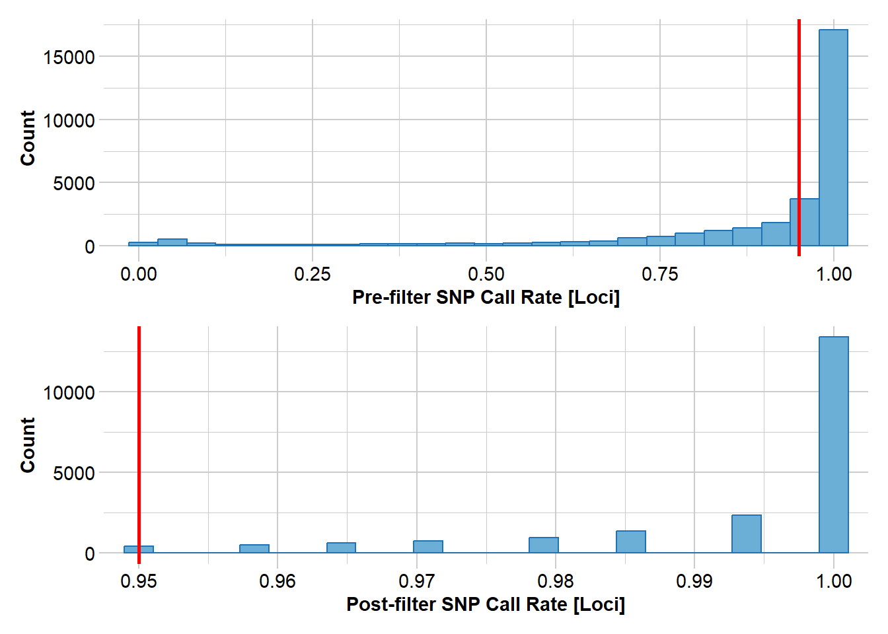
Completed: gl.filter.callrate Next we filter on callrate by individual.
gl.report.callrate(gl,method="ind")Starting gl.report.callrate
Processing genlight object with SNP data
Reporting Call Rate by Individual
No. of loci = 31289
No. of individuals = 141
Minimum : 0.797277
1st quartile : 0.8339352
Median : 0.9124932
Mean : 0.8839168
3r quartile : 0.9163923
Maximum : 0.9251814
Missing Rate Overall: 0.1161
Listing 4 populations and their average CallRates
Monitor again after filtering
Population CallRate N
1 Border-Nth 0.8448 13
2 Border-Sth 0.9183 41
3 Gwydir 0.8923 65
4 Namoi 0.8183 22
Listing 20 individuals with the lowest CallRates
Use this list to see which individuals will be lost on filtering by individual
Set ind.to.list parameter to see more individuals
Individual Population CallRate
1 AA042480 Namoi 0.7972770
2 AA042489 Namoi 0.8008885
3 AA042490 Namoi 0.8025824
4 AA042483 Namoi 0.8049155
5 AA042487 Namoi 0.8059382
6 AA042485 Namoi 0.8079836
7 AA004440 Namoi 0.8101569
8 AA18895 Border-Nth 0.8114673
9 AA004435 Namoi 0.8141200
10 Q19145 Border-Nth 0.8142159
11 AA042497 Gwydir 0.8143437
12 Q19128 Border-Nth 0.8147911
13 AA004436 Namoi 0.8150468
14 AA004460 Gwydir 0.8166448
15 AA042481 Namoi 0.8175078
16 AA004433 Namoi 0.8189779
17 Q19130 Border-Nth 0.8205440
18 AA004442 Namoi 0.8209914
19 AA061829 Gwydir 0.8233245
20 Q19131 Border-Nth 0.8238359
)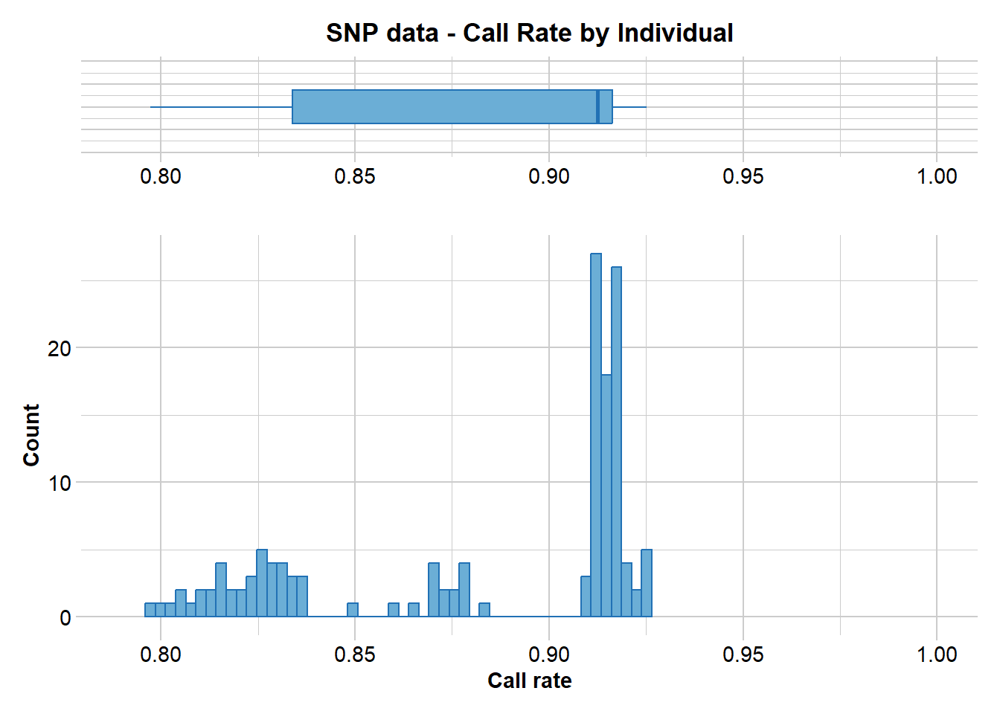
Completed: gl.report.callrate No individuals have an unacceptable call rate so we do not filter any out.
gl.report.rdepth(gl)Starting gl.report.rdepth
Processing genlight object with SNP data
Reporting Read Depth by Locus
No. of loci = 31289
No. of individuals = 141
Minimum : 2.5
1st quartile : 6.6
Median : 10.4
Mean : 12.50514
3r quartile : 16.5
Maximum : 109.9
Missing Rate Overall: 0.12 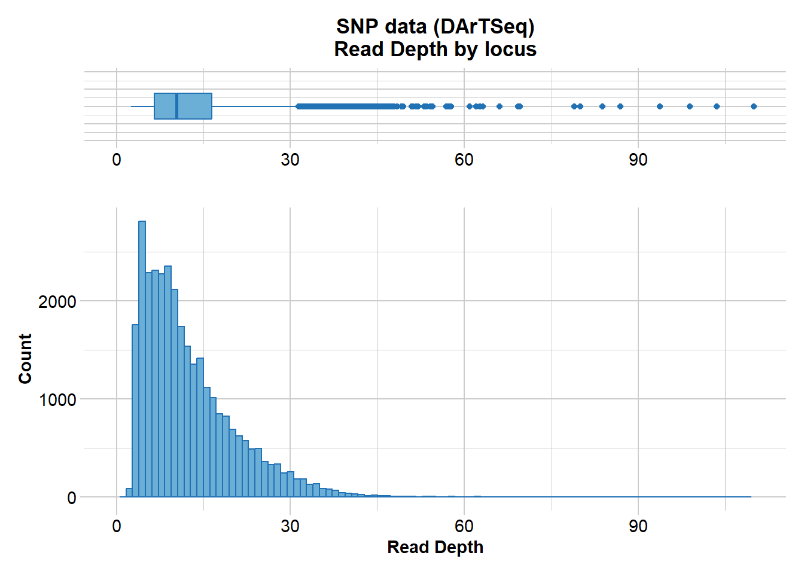
Quantile Threshold Retained Percent Filtered Percent
1 100% 109.9 1 0.0 31288 100.0
2 95% 28.4 1567 5.0 29722 95.0
3 90% 23.7 3170 10.1 28119 89.9
4 85% 20.7 4703 15.0 26586 85.0
5 80% 18.4 6272 20.0 25017 80.0
6 75% 16.5 7841 25.1 23448 74.9
7 70% 14.9 9476 30.3 21813 69.7
8 65% 13.6 10958 35.0 20331 65.0
9 60% 12.4 12538 40.1 18751 59.9
10 55% 11.3 14148 45.2 17141 54.8
11 50% 10.4 15647 50.0 15642 50.0
12 45% 9.5 17403 55.6 13886 44.4
13 40% 8.8 18886 60.4 12403 39.6
14 35% 8.1 20368 65.1 10921 34.9
15 30% 7.3 22033 70.4 9256 29.6
16 25% 6.6 23484 75.1 7805 24.9
17 20% 5.8 25199 80.5 6090 19.5
18 15% 5.1 26636 85.1 4653 14.9
19 10% 4.4 28252 90.3 3037 9.7
20 5% 3.7 29879 95.5 1410 4.5
21 0% 2.5 31289 100.0 0 0.0
Completed: gl.report.rdepth Filter on read depth, selecting 5x as a minimum.
gl.filter.rdepth(gl, lower=5)Starting gl.filter.rdepth
Processing genlight object with SNP data
Removing loci with rdepth <= 5 and >= 1000 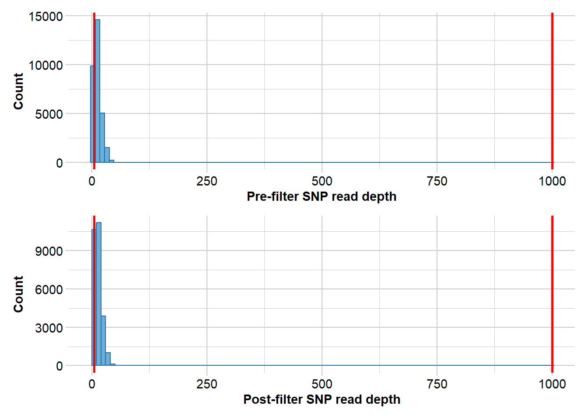
Summary of filtered dataset
Initial no. of loci = 31289
No. of loci deleted = 4424
No. of loci retained: 26865
No. of individuals: 141
No. of populations: 4
Completed: gl.filter.rdepth ********************
*** DARTR OBJECT ***
********************
** 141 genotypes, 26,865 SNPs , size: 72.4 Mb
missing data: 377576 (=9.97 %) scored as NA
** Genetic data
@gen: list of 141 SNPbin
@ploidy: ploidy of each individual (range: 2-2)
** Additional data
@ind.names: 141 individual labels
@loc.names: 26865 locus labels
@loc.all: 26865 allele labels
@position: integer storing positions of the SNPs [within 69 base sequence]
@pop: population of each individual (group size range: 13-65)
@other: a list containing: loc.metrics, ind.metrics, latlon, loc.metrics.flags, verbose, history
@other$ind.metrics: id, pop, drainage, species, lat, lon, service, plate_location
@other$loc.metrics: AlleleID, CloneID, AlleleSequence, TrimmedSequence, Chrom_Myuchelys_georgesi_rMyuGeo1.pri, ChromPosTag_Myuchelys_georgesi_rMyuGeo1.pri, ChromPosSnp_Myuchelys_georgesi_rMyuGeo1.pri, AlnCnt_Myuchelys_georgesi_rMyuGeo1.pri, AlnEvalue_Myuchelys_georgesi_rMyuGeo1.pri, Strand_Myuchelys_georgesi_rMyuGeo1.pri, SNP, SnpPosition, CallRate, OneRatioRef, OneRatioSnp, FreqHomRef, FreqHomSnp, FreqHets, PICRef, PICSnp, AvgPIC, AvgCountRef, AvgCountSnp, RepAvg, clone, uid, rdepth, monomorphs, maf, OneRatio, PIC
@other$latlon[g]: coordinates for all individuals are attachedThen report on reproducibility. Recall that DArT run technical replicates to check the reliability of calls.
gl.report.reproducibility(gl)Starting gl.report.reproducibility
Processing genlight object with SNP data
Reporting Repeatability by Locus
No. of loci = 31289
No. of individuals = 141
Minimum : 0.930233
1st quartile : 0.983051
Median : 0.992857
Mean : 0.9890095
3r quartile : 1
Maximum : 1
Missing Rate Overall: 0.12 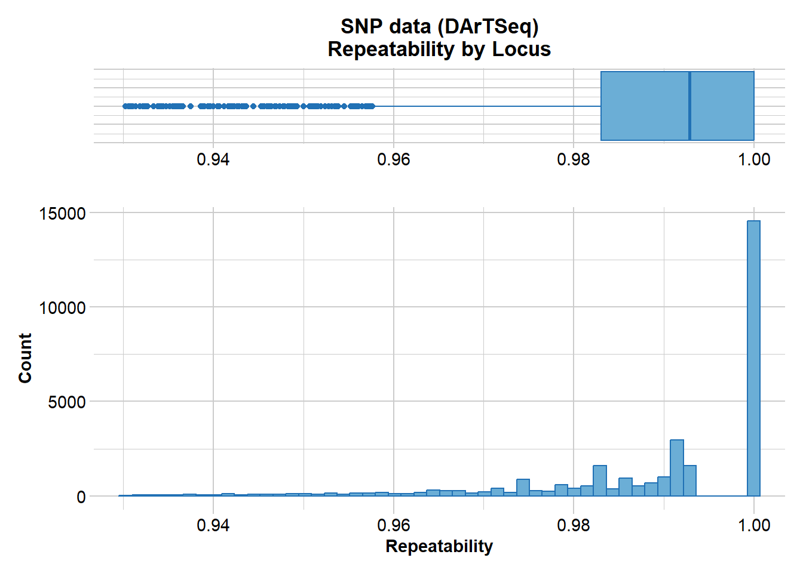
Quantile Threshold Retained Percent Filtered Percent
1 100% 1.000000 14560 46.5 16729 53.5
2 95% 1.000000 14560 46.5 16729 53.5
3 90% 1.000000 14560 46.5 16729 53.5
4 85% 1.000000 14560 46.5 16729 53.5
5 80% 1.000000 14560 46.5 16729 53.5
6 75% 1.000000 14560 46.5 16729 53.5
7 70% 1.000000 14560 46.5 16729 53.5
8 65% 1.000000 14560 46.5 16729 53.5
9 60% 1.000000 14560 46.5 16729 53.5
10 55% 1.000000 14560 46.5 16729 53.5
11 50% 0.992857 15668 50.1 15621 49.9
12 45% 0.991667 17337 55.4 13952 44.6
13 40% 0.991228 18776 60.0 12513 40.0
14 35% 0.988889 20346 65.0 10943 35.0
15 30% 0.985714 22052 70.5 9237 29.5
16 25% 0.983051 23708 75.8 7581 24.2
17 20% 0.980000 25123 80.3 6166 19.7
18 15% 0.975000 26626 85.1 4663 14.9
19 10% 0.967742 28169 90.0 3120 10.0
20 5% 0.956897 29735 95.0 1554 5.0
21 0% 0.930233 31289 100.0 0 0.0
Completed: gl.report.reproducibility There are quite a few loci that show poor reproducibility. So lets filter out those with a reproducibility of less than 99%
gl.filter.reproducibility(gl, threshold=0.99)Starting gl.filter.reproducibility
Processing genlight object with SNP data
Removing loci with repeatability less than 0.99 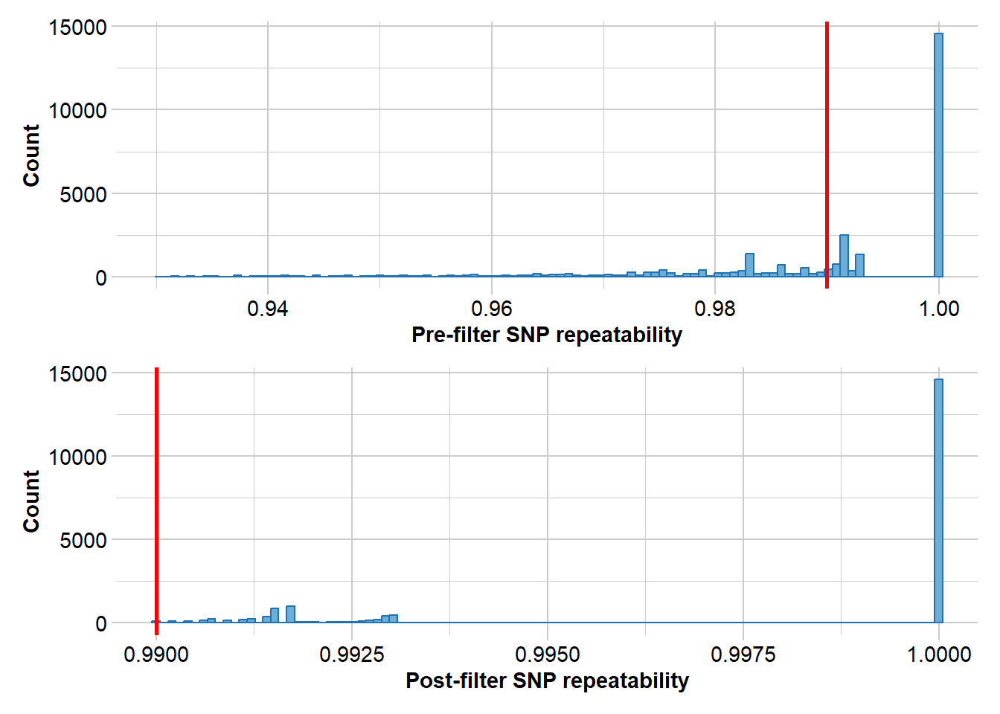
Summary of filtered dataset
Retaining loci with repeatability >= 0.99
Original no. of loci: 31289
No. of loci discarded: 11431
No. of loci retained: 19858
No. of individuals: 141
No. of populations: 4
Completed: gl.filter.reproducibility ********************
*** DARTR OBJECT ***
********************
** 141 genotypes, 19,858 SNPs , size: 69.6 Mb
missing data: 371269 (=13.26 %) scored as NA
** Genetic data
@gen: list of 141 SNPbin
@ploidy: ploidy of each individual (range: 2-2)
** Additional data
@ind.names: 141 individual labels
@loc.names: 19858 locus labels
@loc.all: 19858 allele labels
@position: integer storing positions of the SNPs [within 69 base sequence]
@pop: population of each individual (group size range: 13-65)
@other: a list containing: loc.metrics, ind.metrics, latlon, loc.metrics.flags, verbose, history
@other$ind.metrics: id, pop, drainage, species, lat, lon, service, plate_location
@other$loc.metrics: AlleleID, CloneID, AlleleSequence, TrimmedSequence, Chrom_Myuchelys_georgesi_rMyuGeo1.pri, ChromPosTag_Myuchelys_georgesi_rMyuGeo1.pri, ChromPosSnp_Myuchelys_georgesi_rMyuGeo1.pri, AlnCnt_Myuchelys_georgesi_rMyuGeo1.pri, AlnEvalue_Myuchelys_georgesi_rMyuGeo1.pri, Strand_Myuchelys_georgesi_rMyuGeo1.pri, SNP, SnpPosition, CallRate, OneRatioRef, OneRatioSnp, FreqHomRef, FreqHomSnp, FreqHets, PICRef, PICSnp, AvgPIC, AvgCountRef, AvgCountSnp, RepAvg, clone, uid, rdepth, monomorphs, maf, OneRatio, PIC
@other$latlon[g]: coordinates for all individuals are attachedgl.smearplot(gl) Processing genlight object with SNP data
Starting gl.smearplot 
Completed: gl.smearplot 
Step 5 Exploratory visualization:
pca <- gl.pcoa(gl)Starting gl.pcoa
Processing genlight object with SNP data
Performing a PCA, individuals as entities, loci as attributes, SNP genotype as state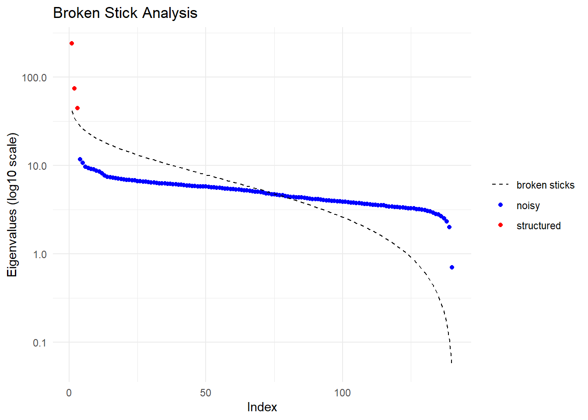
Ordination yielded 3 informative dimensions( broken-stick criterion) from 140 original dimensions
PCA Axis 1 explains 22.8 % of the total variance
PCA Axis 1 and 2 combined explain 29.9 % of the total variance
PCA Axis 1-3 combined explain 34.1 % of the total variance
Starting gl.colors
Selected color type 2
Completed: gl.colors 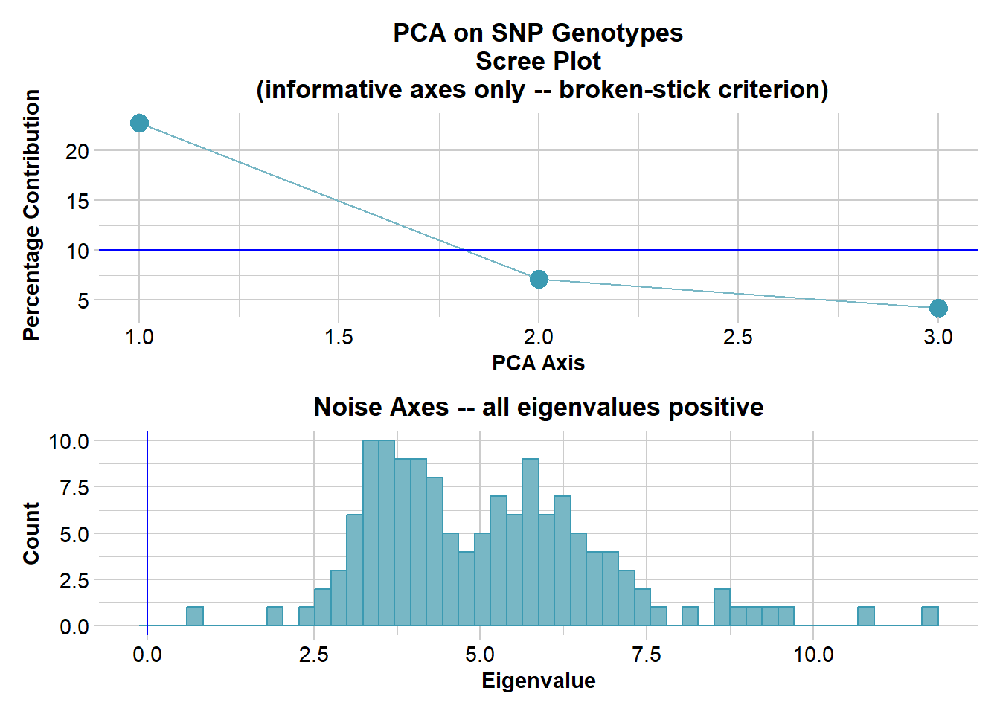
Completed: gl.pcoa gl.pcoa.plot(pca,gl,ellipse=TRUE, plevel=0.95)Starting gl.pcoa.plot
Processing an ordination file (glPca)
Processing genlight object with SNP data
Plotting populations in a space defined by the SNPs
Preparing plot .... please wait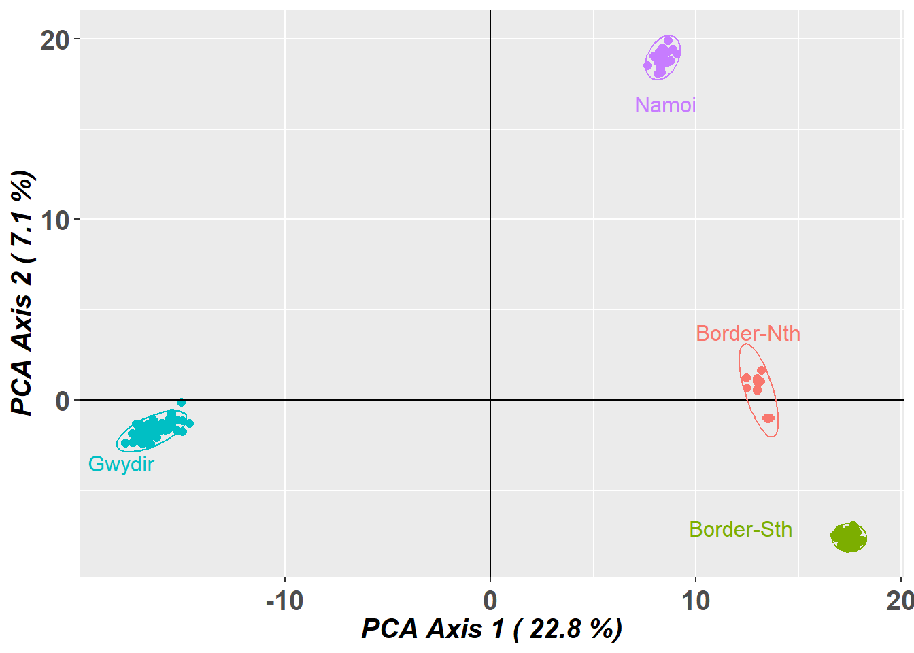
Completed: gl.pcoa.plot 
Note: You might be tempted to filter out all loci that are less than 100% reliable, but this can cause an ascertainment bias. In particular, loci that are heterozygous will be called with less certainty, and so filtering that is too stringent will preferentially remove more polymophic sites.
Now lets visualize the structure with PCA. Note that we do not need to impute because the missing value rate is only 0.6%, unlikely to cause appreciable distortion.
gl.pcoa.plot(pca,gl,xaxis=1, yaxis=3, ellipse = TRUE, plevel=0.95)Starting gl.pcoa.plot
Processing an ordination file (glPca)
Processing genlight object with SNP data
Plotting populations in a space defined by the SNPs
Preparing plot .... please wait
Completed: gl.pcoa.plot 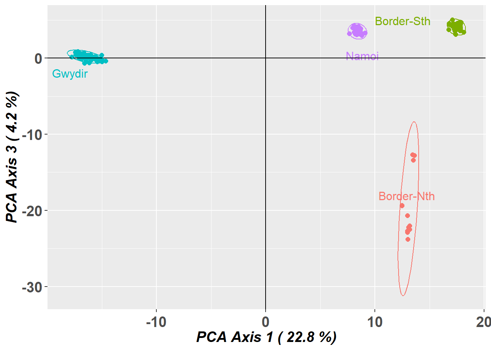
Four nice clusters in the space defined by the top two dimensions. Note however that, by the split stick criterion, there are three informative dimensions. Separation can be believed, but proximity is ambiguous. So the proximity of the two drainages within the border rivers region may not be sustained when we examine the third dimension.
gl.pcoa.plot(pca,gl,xaxis=1, yaxis=3,interactive=TRUE)And indeed it is not. Why do we look at PC axis 1 and 2, then PC axis 1 and 3. Why not 3 and 4. First of all, axis 4 was not informative, and will likely be misleading if we do not scale the axes. Second, if you plot 1 vs 2 and 1 vs 3, you can flop 1 vs 3 back into the page and better visualize the 3D structure in the dataset.
Better still, you can plot the data in 3D and then manually apply a rotation of the axes to better show the separation of sites.
gl.pcoa.plot(pca,gl,xaxis=1, yaxis=2, zaxis=3)Starting gl.pcoa.plot
Processing an ordination file (glPca)
Processing genlight object with SNP data
Displaying a three dimensional plot, mouse over for details for each point
May need to zoom out to place 3D plot within bounds
Completed: gl.pcoa.plot All good. Four aggregations that can be distinguished by their allelic profiles folloing ordination and dimension reduction.
Step 6 Analysis:
F Statistics
# F Statistics
gl.report.fstat(gl)Starting gl.report.fstat
Processing genlight object with SNP data
$Stat_matrices
$Stat_matrices$Fst
Border-Nth Border-Sth Gwydir Namoi
Border-Nth NA 0.1066 0.2428 0.1617
Border-Sth 0.1066 NA 0.2044 0.1337
Gwydir 0.2428 0.2044 NA 0.2117
Namoi 0.1617 0.1337 0.2117 NA
$Stat_matrices$Fstp
Border-Nth Border-Sth Gwydir Namoi
Border-Nth NA 0.1926 0.3907 0.2784
Border-Sth 0.1926 NA 0.3395 0.2358
Gwydir 0.3907 0.3395 NA 0.3494
Namoi 0.2784 0.2358 0.3494 NA
$Stat_matrices$Dest
Border-Nth Border-Sth Gwydir Namoi
Border-Nth NA 0.0272 0.0595 0.0405
Border-Sth 0.0272 NA 0.0575 0.0368
Gwydir 0.0595 0.0575 NA 0.0526
Namoi 0.0405 0.0368 0.0526 NA
$Stat_matrices$Gst_H
Border-Nth Border-Sth Gwydir Namoi
Border-Nth NA 0.2281 0.4505 0.3254
Border-Sth 0.2281 NA 0.4022 0.2815
Gwydir 0.4505 0.4022 NA 0.4056
Namoi 0.3254 0.2815 0.4056 NA
$Stat_tables
Stat_tables.Border.Nth_vs_Border.Sth Stat_tables.Border.Nth_vs_Gwydir
Fst 0.1066 0.2428
Fstp 0.1926 0.3907
Dest 0.0272 0.0595
Gst_H 0.2281 0.4505
Stat_tables.Border.Nth_vs_Namoi Stat_tables.Border.Sth_vs_Gwydir
Fst 0.1617 0.2044
Fstp 0.2784 0.3395
Dest 0.0405 0.0575
Gst_H 0.3254 0.4022
Stat_tables.Border.Sth_vs_Namoi Stat_tables.Gwydir_vs_Namoi
Fst 0.1337 0.2117
Fstp 0.2358 0.3494
Dest 0.0368 0.0526
Gst_H 0.2815 0.4056
Starting gl.plot.heatmap Found more than one class "dist" in cache; using the first, from namespace 'BiocGenerics'Also defined by 'spam' Processing a data matrixWarning in rep(col, length.out = leaves_length): 'x' is NULL so the result will
be NULLWarning in rep(if (nam %in% names(L)) L[[nam]] else default, length.out =
indx): 'x' is NULL so the result will be NULL
Warning in rep(if (nam %in% names(L)) L[[nam]] else default, length.out =
indx): 'x' is NULL so the result will be NULL
Warning in rep(if (nam %in% names(L)) L[[nam]] else default, length.out =
indx): 'x' is NULL so the result will be NULL
Warning in rep(if (nam %in% names(L)) L[[nam]] else default, length.out =
indx): 'x' is NULL so the result will be NULL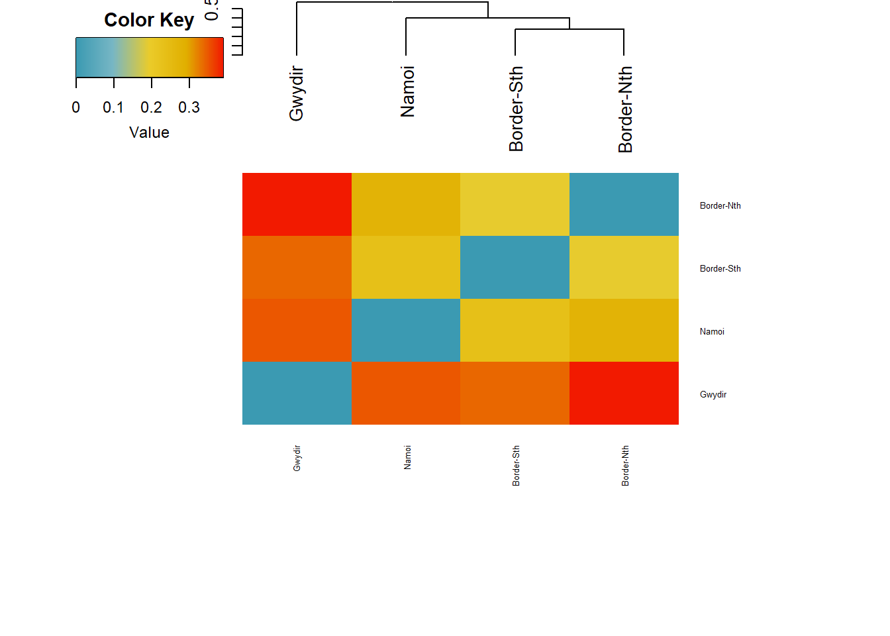
Completed: gl.plot.heatmap
Completed: gl.report.fstat $Stat_matrices
$Stat_matrices$Fst
Border-Nth Border-Sth Gwydir Namoi
Border-Nth NA 0.1066 0.2428 0.1617
Border-Sth 0.1066 NA 0.2044 0.1337
Gwydir 0.2428 0.2044 NA 0.2117
Namoi 0.1617 0.1337 0.2117 NA
$Stat_matrices$Fstp
Border-Nth Border-Sth Gwydir Namoi
Border-Nth NA 0.1926 0.3907 0.2784
Border-Sth 0.1926 NA 0.3395 0.2358
Gwydir 0.3907 0.3395 NA 0.3494
Namoi 0.2784 0.2358 0.3494 NA
$Stat_matrices$Dest
Border-Nth Border-Sth Gwydir Namoi
Border-Nth NA 0.0272 0.0595 0.0405
Border-Sth 0.0272 NA 0.0575 0.0368
Gwydir 0.0595 0.0575 NA 0.0526
Namoi 0.0405 0.0368 0.0526 NA
$Stat_matrices$Gst_H
Border-Nth Border-Sth Gwydir Namoi
Border-Nth NA 0.2281 0.4505 0.3254
Border-Sth 0.2281 NA 0.4022 0.2815
Gwydir 0.4505 0.4022 NA 0.4056
Namoi 0.3254 0.2815 0.4056 NA
[[2]]
Stat_tables.Border.Nth_vs_Border.Sth Stat_tables.Border.Nth_vs_Gwydir
Fst 0.1066 0.2428
Fstp 0.1926 0.3907
Dest 0.0272 0.0595
Gst_H 0.2281 0.4505
Stat_tables.Border.Nth_vs_Namoi Stat_tables.Border.Sth_vs_Gwydir
Fst 0.1617 0.2044
Fstp 0.2784 0.3395
Dest 0.0405 0.0575
Gst_H 0.3254 0.4022
Stat_tables.Border.Sth_vs_Namoi Stat_tables.Gwydir_vs_Namoi
Fst 0.1337 0.2117
Fstp 0.2358 0.3494
Dest 0.0368 0.0526
Gst_H 0.2815 0.4056The structure in the PCA is reflected in the Fst values.
0–0.05: little differentiation 0.05–0.15: low–moderate 0.15–0.25: moderate > 0.25: high / very high
Border Nth vs South : low-moderate Rest : Moderate
What about allelic richness.
# Allelic Richness
r1 <- gl.report.allelerich(gl)Starting gl.report.allelerich
Processing genlight object with SNP data
Calculating Allelic Richness, averaged across
loci, for each population
Starting gl.colors
Selected color type dis
Completed: gl.colors
Returning a dataframe with allelic richness values
Completed: gl.report.allelerich 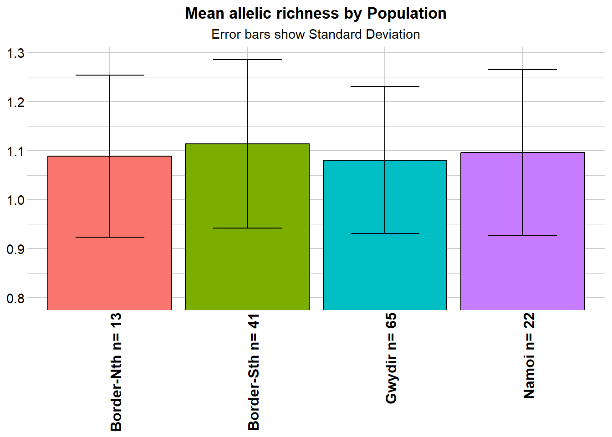
Nothing spectacular there.
gl.report.heterozygosity(gl)Starting gl.report.heterozygosity
Processing genlight object with SNP data
Calculating Observed Heterozygosities, averaged across
loci, for each population
Calculating Expected Heterozygosities
Starting gl.colors
Selected color type dis
Completed: gl.colors
Reporting Heterozygosity by Population
No. of loci = 31289
No. of individuals = 141
No. of populations = 4
Minimum Observed Heterozygosity: 0.059274
Maximum Observed Heterozygosity: 0.094814
Average Observed Heterozygosity: 0.073427
Minimum Unbiased Expected Heterozygosity: 0.078557
Maximum Unbiased Expected Heterozygosity: 0.11251
Average Unbiased Expected Heterozygosity: 0.093563
Heterozygosity estimates not corrected for uncalled invariant loci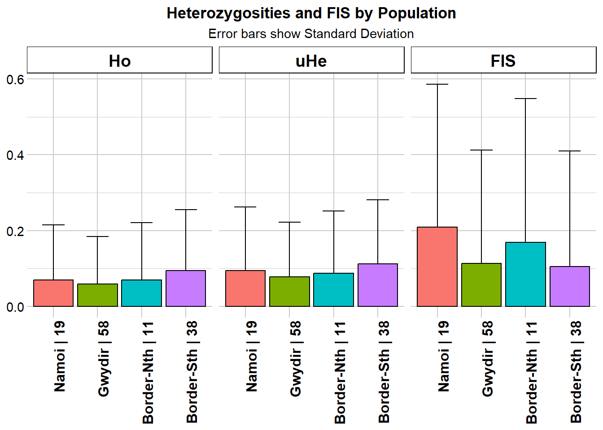
pop n.Ind n.Loc n.Loc.adj polyLoc monoLoc all_NALoc
Border-Nth Border-Nth 11.37846 30201 1 10030 20171 1088
Border-Sth Border-Sth 37.87628 31102 1 18810 12292 187
Gwydir Gwydir 58.40274 31072 1 19520 11552 217
Namoi Namoi 18.54781 30368 1 11547 18821 921
Ho HoSD HoSE He HeSD HeSE uHe
Border-Nth 0.069692 0.150969 0.000869 0.084082 0.156419 0.000900 0.087947
Border-Sth 0.094814 0.160880 0.000912 0.111025 0.166190 0.000942 0.112510
Gwydir 0.059274 0.125246 0.000711 0.077885 0.142433 0.000808 0.078557
Namoi 0.069927 0.145044 0.000832 0.092670 0.162685 0.000934 0.095238
uHeSD uHeSE FIS FISSD FISSE
Border-Nth 0.163608 0.000941 0.169373 0.379021 0.004008
Border-Sth 0.168413 0.000955 0.104848 0.304782 0.002233
Gwydir 0.143663 0.000815 0.113107 0.299205 0.002154
Namoi 0.167192 0.000959 0.209529 0.376625 0.003654
Returning a dataframe with heterozygosity values
Completed: gl.report.heterozygosity Again, not a lot in that. No strong evidence of inbreeding depression in any of the four aggregations.
gl.report.diversity(gl)Starting gl.report.diversity
Processing genlight object with SNP data
Starting gl.filter.allna
Identifying and removing loci and individuals scored all
missing (NA)
Deleting loci that are scored as all missing (NA)
Zero loci that are missing (NA) across all individuals
Deleting individuals that are scored as all missing (NA)
Zero individuals that are missing (NA) across all loci
Completed: gl.filter.allna Warning in one_H_alpha_es[[x[1]]]$dummys[i1 %in% index] +
one_H_alpha_es[[x[2]]]$dummys[i2 %in% : longer object length is not a multiple
of shorter object lengthWarning in one_H_alpha_all[i0 %in% index] - (one_H_alpha_es[[x[1]]]$dummys[i1
%in% : longer object length is not a multiple of shorter object lengthWarning in one_H_alpha_es[[x[1]]]$dummys[i1 %in% index] +
one_H_alpha_es[[x[2]]]$dummys[i2 %in% : longer object length is not a multiple
of shorter object lengthWarning in one_H_alpha_all[i0 %in% index] - (one_H_alpha_es[[x[1]]]$dummys[i1
%in% : longer object length is not a multiple of shorter object lengthWarning in one_H_alpha_es[[x[1]]]$dummys[i1 %in% index] +
one_H_alpha_es[[x[2]]]$dummys[i2 %in% : longer object length is not a multiple
of shorter object lengthWarning in one_H_alpha_all[i0 %in% index] - (one_H_alpha_es[[x[1]]]$dummys[i1
%in% : longer object length is not a multiple of shorter object lengthWarning in one_H_alpha_es[[x[1]]]$dummys[i1 %in% index] +
one_H_alpha_es[[x[2]]]$dummys[i2 %in% : longer object length is not a multiple
of shorter object lengthWarning in one_H_alpha_all[i0 %in% index] - (one_H_alpha_es[[x[1]]]$dummys[i1
%in% : longer object length is not a multiple of shorter object lengthWarning in one_H_alpha_es[[x[1]]]$dummys[i1 %in% index] +
one_H_alpha_es[[x[2]]]$dummys[i2 %in% : longer object length is not a multiple
of shorter object lengthWarning in one_H_alpha_all[i0 %in% index] - (one_H_alpha_es[[x[1]]]$dummys[i1
%in% : longer object length is not a multiple of shorter object lengthWarning in one_H_alpha_es[[x[1]]]$dummys[i1 %in% index] +
one_H_alpha_es[[x[2]]]$dummys[i2 %in% : longer object length is not a multiple
of shorter object lengthWarning in one_H_alpha_all[i0 %in% index] - (one_H_alpha_es[[x[1]]]$dummys[i1
%in% : longer object length is not a multiple of shorter object lengthStarting gl.colors
Selected color type dis
Completed: gl.colors 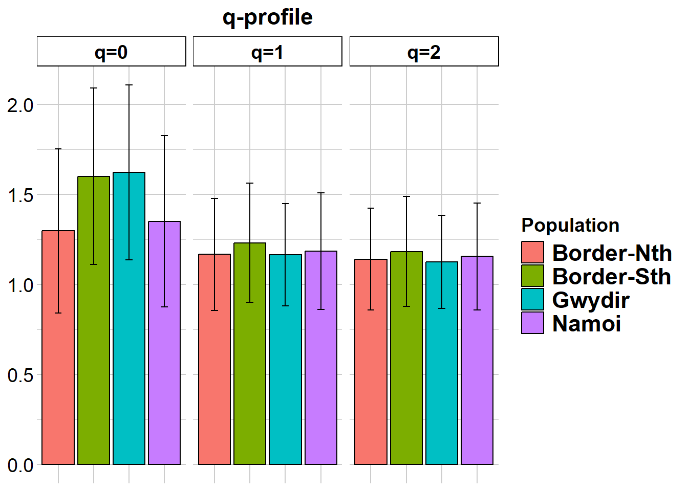
| | nloci| m_0Ha| sd_0Ha| m_1Ha| sd_1Ha| m_2Ha| sd_2Ha|
|:----------|-----:|-----:|------:|-----:|------:|-----:|------:|
|Border-Nth | 30201| 0.296| 0.457| 0.125| 0.225| 0.084| 0.156|
|Border-Sth | 31102| 0.599| 0.490| 0.177| 0.237| 0.111| 0.166|
|Gwydir | 31072| 0.621| 0.485| 0.129| 0.204| 0.078| 0.142|
|Namoi | 30368| 0.350| 0.477| 0.139| 0.234| 0.093| 0.163|
pairwise non-missing loci
| | Border-Nth| Border-Sth| Gwydir| Namoi|
|:----------|----------:|----------:|------:|-----:|
|Border-Nth | NA| NA| NA| NA|
|Border-Sth | 30154| NA| NA| NA|
|Gwydir | 30064| 30892| NA| NA|
|Namoi | 29807| 30274| 30230| NA|
0_H_beta
| | Border-Nth| Border-Sth| Gwydir| Namoi|
|:----------|----------:|----------:|------:|-----:|
|Border-Nth | NA| 0.252| 0.257| 0.230|
|Border-Sth | 0.218| NA| 0.255| 0.254|
|Gwydir | 0.272| 0.299| NA| 0.257|
|Namoi | 0.139| 0.228| 0.271| NA|
1_H_beta
| | Border-Nth| Border-Sth| Gwydir| Namoi|
|:----------|----------:|----------:|------:|-----:|
|Border-Nth | NA| 0.277| 0.265| 0.279|
|Border-Sth | 0.041| NA| 0.270| 0.280|
|Gwydir | 0.064| 0.047| NA| 0.268|
|Namoi | 0.056| 0.035| 0.059| NA|
2_H_beta
| | Border-Nth| Border-Sth| Gwydir| Namoi|
|:----------|----------:|----------:|------:|-----:|
|Border-Nth | NA| 0.160| 0.143| 0.161|
|Border-Sth | 0.028| NA| 0.127| 0.146|
|Gwydir | 0.060| 0.048| NA| 0.141|
|Namoi | 0.039| 0.025| 0.055| NA|
| | nloci| m_0Da| sd_0Da| m_1Da| sd_1Da| m_2Da| sd_2Da|
|:----------|-----:|-----:|------:|-----:|------:|-----:|------:|
|Border-Nth | 30201| 1.296| 0.457| 1.166| 0.311| 1.140| 0.283|
|Border-Sth | 31102| 1.599| 0.490| 1.230| 0.331| 1.181| 0.305|
|Gwydir | 31072| 1.621| 0.485| 1.165| 0.284| 1.124| 0.259|
|Namoi | 30368| 1.350| 0.477| 1.185| 0.323| 1.155| 0.296|
pairwise non-missing loci
| | Border-Nth| Border-Sth| Gwydir| Namoi|
|:----------|----------:|----------:|------:|-----:|
|Border-Nth | NA| NA| NA| NA|
|Border-Sth | 30154| NA| NA| NA|
|Gwydir | 30064| 30892| NA| NA|
|Namoi | 29807| 30274| 30230| NA|
0_D_beta
| | Border-Nth| Border-Sth| Gwydir| Namoi|
|:----------|----------:|----------:|------:|-----:|
|Border-Nth | NA| 0.252| 0.257| 0.230|
|Border-Sth | 1.218| NA| 0.255| 0.254|
|Gwydir | 1.272| 1.299| NA| 0.257|
|Namoi | 1.139| 1.228| 1.271| NA|
1_D_beta
| | Border-Nth| Border-Sth| Gwydir| Namoi|
|:----------|----------:|----------:|------:|-----:|
|Border-Nth | NA| 0.323| 0.315| 0.329|
|Border-Sth | 1.084| NA| 0.315| 0.324|
|Gwydir | 1.106| 1.088| NA| 0.317|
|Namoi | 1.102| 1.079| 1.101| NA|
2_D_beta
| | Border-Nth| Border-Sth| Gwydir| Namoi|
|:----------|----------:|----------:|------:|-----:|
|Border-Nth | NA| 0.183| 0.174| 0.186|
|Border-Sth | 1.042| NA| 0.157| 0.170|
|Gwydir | 1.074| 1.059| NA| 0.171|
|Namoi | 1.054| 1.037| 1.068| NA|
Completed: gl.report.diversity # Private Alleles
r1 <- gl.report.pa(gl)Starting gl.report.pa
Processing genlight object with SNP data
p1 p2 pop1 pop2 N1 N2 fixed priv1 priv2 Chao1 Chao2 totalpriv
1 1 2 Border-Nth Border-Sth 13 41 111 1950 11174 120 314 13124
2 1 3 Border-Nth Gwydir 13 65 243 3258 13084 120 682 16342
3 1 4 Border-Nth Namoi 13 22 159 3321 4948 120 265 8269
4 2 3 Border-Sth Gwydir 41 65 296 8874 9571 314 682 18445
5 2 4 Border-Sth Namoi 41 22 151 10684 3093 314 265 13777
6 3 4 Gwydir Namoi 65 22 234 12302 4057 682 265 16359
AFD asym asym.sig
1 0.084 NA NA
2 0.116 NA NA
3 0.097 NA NA
4 0.122 NA NA
5 0.097 NA NA
6 0.110 NA NA
Table of private alleles and fixed differences returned
Completed: gl.report.pa Again, not a lot to see there, though there seems to be a discrepency between q=0 and the results from gl.report.heterozygosity. Coders?
Lets see where these four populations sit in relation to expectation build on the global trend in allelic richness against population size. This takes some time to run, so maybe do this at another time.
# Allelic Richness Simulation
r2 <- gl.report.nall( x = gl, simlevels = seq(1, nInd(gl), 5), reps = 10, plot.colors.pop = gl.colors("dis"), ncores = 2)Starting gl.report.nall
Processing genlight object with SNP data
Starting gl.filter.allna
Identifying and removing loci that are all missing (NA)
in any one population
Deleting loci that are all missing (NA) in any one population
Border-Nth : deleted 1088 loci
Border-Sth : deleted 187 loci
Gwydir : deleted 217 loci
Namoi : deleted 921 loci
Loci all NA in one or more populations: 1608 deleted
Completed: gl.filter.allna
Starting gl.colors
Selected color type dis
Completed: gl.colors 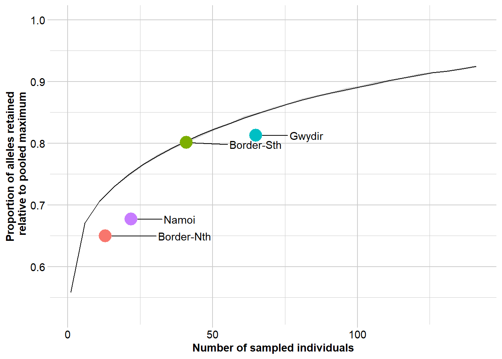
Completed: gl.report.nall Questions:
- Is there structure in the dataset evident in the PCA?
- Is this borne out by FST analysis?
- Are there discrete management units evident?
- Are any of these showing evidence of critical loss of genetic diversity/inbreeding?
- What are the lessons/advice for management?